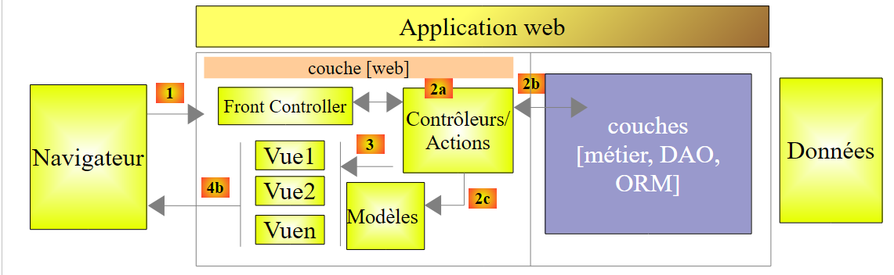
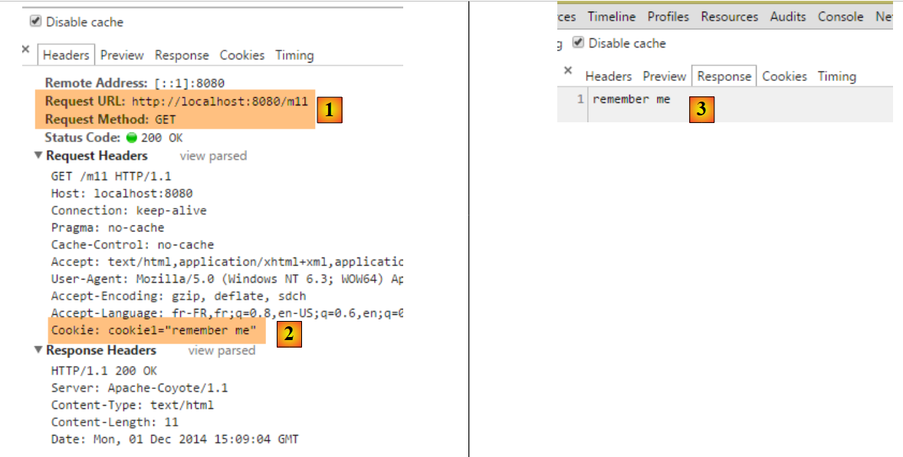
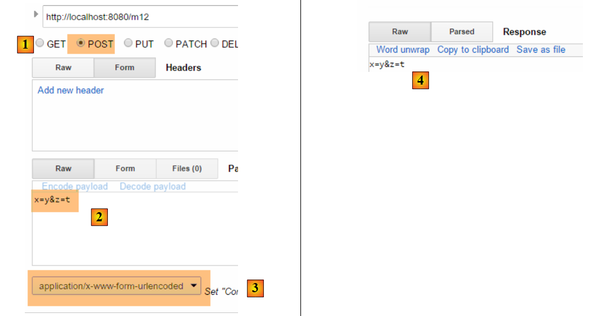
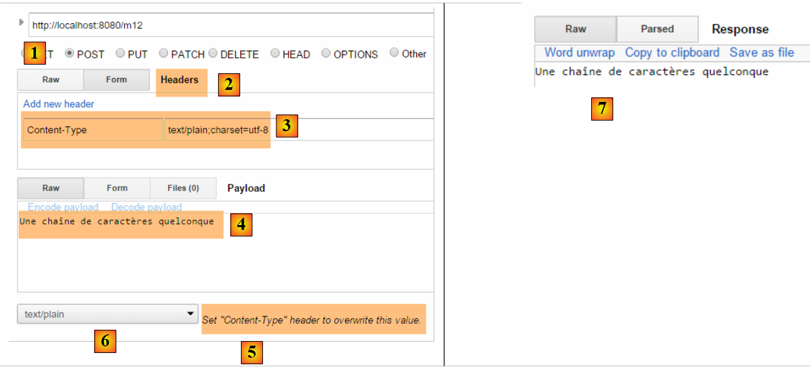
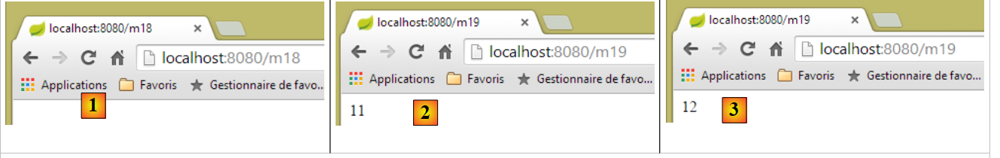
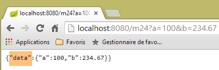
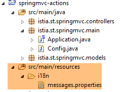
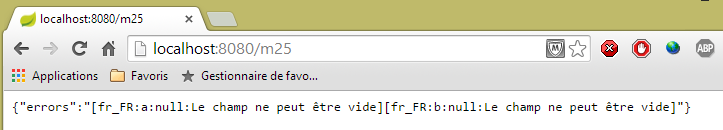
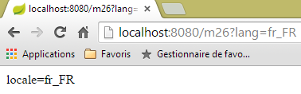
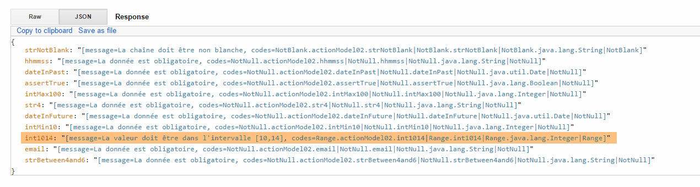

4. الإجراءات: النموذج
لنعد إلى بنية تطبيق Spring MVC:
 |
في الفصل السابق، تناولنا العملية التي توجه الطلب [1] إلى وحدة التحكم والإجراء [2a] الذي سيتولى معالجته، وهي آلية تُعرف باسم التوجيه. كما عرضنا الاستجابات المختلفة التي يمكن أن ترسلها الإجراء إلى المتصفح. حتى الآن، عرضنا إجراءات لم تقم بمعالجة الطلب المقدم إليها. يحمل الطلب [1] أجزاء مختلفة من المعلومات التي يقدمها Spring MVC [2a] إلى الإجراء في شكل نموذج. لا ينبغي الخلط بين هذا المصطلح ونموذج M الخاص بعرض V [2c] الذي تنتجه الإجراء:
 |
- يصل طلب HTTP الخاص بالعميل إلى [1]؛
- في [2]، يتم تحويل المعلومات الواردة في الطلب إلى نموذج إجراء [3]، غالبًا ما يكون فئة، ولكنه ليس بالضرورة كذلك، والذي يعمل كمدخل للإجراء [4]؛
- في [4]، يقوم الإجراء، بناءً على هذا النموذج، بإنشاء استجابة. تتكون هذه الاستجابة من مكونين: عرض V [6] ونموذج M لهذا العرض [5]؛
- ستستخدم طريقة العرض V [6] نموذجها M [5] لتوليد استجابة HTTP الموجهة للعميل.
في نموذج MVC، الإجراء [4] هو جزء من C (وحدة التحكم)، ونموذج العرض [5] هو M، والعرض [6] هو V.
يتناول هذا الفصل آليات ربط المعلومات التي يحملها الطلب — وهي سلاسل نصية بطبيعتها — بنموذج الإجراء، الذي يمكن أن يكون فئة ذات خصائص من أنواع مختلفة.
ملاحظة: مصطلح [نموذج الإجراء] ليس مصطلحًا معترفًا به.
نقوم بإنشاء وحدة تحكم جديدة لهذه الإجراءات الجديدة:
 |
سيكون [ActionModelController] كما يلي في الوقت الحالي:
package istia.st.springmvc.controllers;
import org.springframework.web.bind.annotation.RestController;
@RestController
public class ActionModelController {
}
- السطر 5: لاحظ أن التعليق التوضيحي [@RestController] يؤدي إلى أن تكون الاستجابة المرسلة إلى العميل عبارة عن تسلسل سلسلة لنتائج إجراء وحدة التحكم؛
4.1. [/m01]: معلمات GET
نضيف الإجراء [/m01] التالي:
// ----------------------- retrieve parameters with GET------------------------
@RequestMapping(value = "/m01", method = RequestMethod.GET, produces = "text/plain;charset=UTF-8")
public String m01(String nom, String age) {
return String.format("Hello [%s-%s]!, Greetings from Spring Boot!", nom, age);
}
- السطر 4: تقبل الإجراء معلمتين باسم [name] و [age]. سيتم تهيئتهما باستخدام المعلمات التي تحمل نفس الأسماء في طلب HTTP GET؛
النتائج كما يلي في Chrome [1-3]:
 |
- في [1]، طلب GET مع المعلمات [name] و [age]؛
- في [3]، نرى أن الإجراء [/m01] قد استرد هذه المعلمات بنجاح؛
4.2. [/m02]: معلمات POST
نضيف الإجراء [/m02] التالي:
// ----------------------- retrieve parameters with POST------------------------
@RequestMapping(value = "/m02", method = RequestMethod.POST, produces = "text/plain;charset=UTF-8")
public String m02(String nom, String age) {
return String.format("Hello [%s-%s]!, Greetings from Spring Boot!", nom, age);
}
- السطر 4: تقبل الإجراء معلمتين باسم [name] و [age]. سيتم تهيئتهما باستخدام المعلمات التي تحمل نفس الأسماء في طلب HTTP POST؛
فيما يلي النتائج باستخدام [Advanced REST Client]:
 |
- في [1-3]، طلب POST مع المعلمات [name] و [age]؛
- في [4-5]، قمنا بتعيين رأس HTTP [Content-Type] لطلب POST. ويجب أن يكون [Content-Type: application/x-www-form-urlencoded]؛
- في [6]، توفر [Form Data] قائمة بالمعلمات لعملية POST. هنا نرى المعلمتين [name] و [age]؛
- في [7]، تظهر استجابة الخادم أن الإجراء [/m02] قد استرد بنجاح المعلمتين [name] و [age]؛
4.3. [/m03]: المعلمات ذات الأسماء المتطابقة
رأينا في القسم 2.5.2.8 أن قائمة التحديد المتعدد يمكن أن ترسل معلمات ذات أسماء متطابقة إلى الخادم. لنرى كيف يمكن لإجراء ما استردادها. نضيف الإجراء [/m03] التالي:
// ----------------------- retrieve parameters with the same names-----------------
@RequestMapping(value = "/m03", method = RequestMethod.POST, produces = "text/plain;charset=UTF-8")
public String m03(String nom[]) {
return String.format("Hello [%s]!, Greetings from Spring Boot!", String.join("-", nom));
}
- السطر 2: تقبل الإجراء معلمة باسم [name[]]. سيتم تهيئتها هنا بجميع المعلمات التي تحمل هذا الاسم، سواء في طلب GET أو POST، نظرًا لعدم تحديد نوع الطلب هنا؛
والنتائج هي كما يلي:
 |
- باستخدام POST [1]، نرسل المعلمات [2]؛
- يتم تضمين المعلمات أيضًا في عنوان URL [3]؛
- في [4]، المعلمات الأربع التي تحمل الاسم نفسه [name]: [معلمات سلسلة الاستعلام] هي معلمات عنوان URL، و[بيانات النموذج] هي المعلمات المرسلة؛
- في [5]، نرى أن الإجراء [/m03] استرد المعلمات الأربع المسماة [name]؛
4.4. [/m04]: تعيين معلمات الإجراء إلى كائن Java
لننظر إلى الإجراء الجديد التالي [/m04]:
// ------ map parameters to a Command Object ---------------
@RequestMapping(value = "/m04", method = RequestMethod.POST)
public Personne m04(Personne personne) {
return person;
}
- السطر 3: تأخذ الإجراء شخصًا من النوع التالي كمعلمة:
public class Personne {
// identifier
private Integer id;
// name
private String nom;
// age
private int age;
....
// getters and setters
...
}
- لإنشاء المعلمة [Person]، يستدعي Spring MVC [new Person()]؛
- ثم، إذا كانت هناك معلمات تحمل أسماء الحقول [id, name, age] للكائن الذي تم إنشاؤه، فإنه يقوم بإنشاء مثيلات لها باستخدام أدوات التعيين الخاصة بها؛
- السطر 4: تعيد الإجراء نوع [Person]، والذي سيتم بالتالي تسلسله إلى سلسلة قبل إرساله إلى العميل. وقد رأينا أنه بشكل افتراضي، يتم إجراء التسلسل بتسلسل JSON. وبالتالي، يجب أن يتلقى العميل سلسلة JSON لشخص؛
فيما يلي مثال:
 |
- في [1]، المعلمات [id, name, age] لإنشاء كائن [Person]؛
- في [2]، سلسلة JSON الخاصة بهذا الشخص؛
ماذا يحدث إذا لم نرسل جميع الحقول الخاصة بشخص ما؟ دعونا نجرب:
 |
- في [2]، تم تهيئة المعلمة [id] فقط؛
4.5. [/m05]: استرداد العناصر من عنوان URL
لننظر إلى الإجراء الجديد التالي [/m05]:
// ----------------------- retrieve elements from URL ------------------------
@RequestMapping(value = "/m05/{a}/x/{b}", method = RequestMethod.GET)
public Map<String, String> m05(@PathVariable("a") String a, @PathVariable("b") String b) {
Map<String, String> map = new HashMap<String, String>();
map.put("a", a);
map.put("b", b);
return map;
}
- السطر 2: عنوان URL الذي تتم معالجته هو على الشكل [/m05/{a}/x/{b}]، حيث {param} هو معلمة عنوان URL؛
- السطر 3: يتم استرداد عناصر معلمة عنوان URL باستخدام التعليق التوضيحي [@PathVariable]؛
- الأسطر 4-6: يتم وضع العناصر المسترجعة [a] و [b] في قاموس؛
- السطر 7: ستكون الاستجابة عبارة عن سلسلة JSON لهذا القاموس؛
والنتائج هي كما يلي:
 |
4.6. [/m06]: استرداد عناصر ومعلمات URL
انظر الإجراء الجديد التالي [/m06]:
// -------- retrieve elements from URL and parameters---------------
@RequestMapping(value = "/m06/{a}/x/{b}", method = RequestMethod.GET)
public Map<String, Object> m06(@PathVariable("a") Integer a, @PathVariable("b") Double b, Double c) {
Map<String, Object> map = new HashMap<String, Object>();
map.put("a", a);
map.put("b", b);
map.put("c", c);
return map;
}
- السطر 3: نسترد كلاً من عناصر URL [Integer a, Double b] والمعلمة (GET أو POST) [Double c]؛
- الأسطر 4-7: يتم وضع هذه العناصر في قاموس؛
- السطر 8: الذي يشكل استجابة العميل، والتي ستتلقى بالتالي سلسلة JSON من هذا القاموس؛
إليك النتائج:
 |
لاحظ وجود علامة / في نهاية المسار [http://localhost:8080/m06/100/x/200.43/]. بدونها، نحصل على النتيجة الخاطئة التالية:
 |
4.7. [/m07]: الوصول إلى الطلب بأكمله
إليك الإجراء الجديد [/m07]:
// ------ access the HttpServletRequest query ------------------------
@RequestMapping(value = "/m07", method = RequestMethod.GET, produces = "text/plain;charset=UTF-8")
public String m07(HttpServletRequest request) {
// HTTP headers
Enumeration<String> headerNames = request.getHeaderNames();
StringBuffer buffer = new StringBuffer();
while (headerNames.hasMoreElements()) {
String name = headerNames.nextElement();
buffer.append(String.format("%s : %s\n", name, request.getHeader(name)));
}
return buffer.toString();
}
- السطر 3: نطلب من Spring MVC حقن كائن [HttpServletRequest request]، الذي يغلف جميع المعلومات المتاحة حول الطلب؛
- الأسطر 5–10: نسترد جميع رؤوس HTTP من الطلب لتجميعها في سلسلة نرسلها إلى العميل (السطر 11)؛
والنتائج هي كما يلي:
 |
- في [1]، رؤوس HTTP للطلب؛
 |
- في [2]، الاستجابة. جميع رؤوس HTTP من الطلب موجودة بالفعل هناك.
4.8. [/m08]: الوصول إلى كائن [Writer]
لننظر إلى الإجراء التالي:
// ----------------------- injection de writer ------------------------
@RequestMapping(value = "/m08", method = RequestMethod.GET)
public void m08(Writer writer) throws IOException {
writer.write("Bonjour le monde !");
}
- السطر 3: يقوم Spring MVC بحقن الكائن [Writer writer]، مما يسمح بالكتابة إلى دفق الاستجابة إلى العميل؛
- السطر 3: تعيد الإجراء نوع [void]، مما يشير إلى أنه يجب عليها إنشاء الاستجابة للعميل بنفسها؛
- السطر 4: إضافة نص إلى دفق الاستجابة إلى العميل؛
والنتائج هي كما يلي:
 |
- في [2]، نرى أن رأس HTTP [Content-Type] لم يتم إرساله؛
- في [3]، الاستجابة؛
4.9. [/m09]: الوصول إلى رأس HTTP
ضع في اعتبارك الإجراء التالي:
// ----------------------- injection of RequestHeader ------------------------
@RequestMapping(value = "/m09", method = RequestMethod.GET)
public String m09(@RequestHeader("User-Agent") String userAgent) {
return userAgent;
}
- السطر 3: تسترد العلامة [@RequestHeader("User-Agent")] رأس HTTP [User-Agent]؛
- السطر 4: يتم إرجاع نص هذا الرأس؛
والنتائج هي كما يلي:
 |
- في [2]، رأس HTTP [User-Agent]؛
 |
- في [3]، استرجع الإجراء [/m08] هذا الرأس بشكل صحيح؛
4.10. [/m10, /m11]: الوصول إلى ملف تعريف الارتباط
ملف تعريف الارتباط هو عمومًا رأس HTTP يرسله:
- إلى العميل لأول مرة؛
- ثم يرسله العميل بشكل منهجي إلى الخادم؛
أولاً، لنقم بإنشاء إجراء لإنشاء ملف تعريف الارتباط:
// ----------------------- Cookie creation ------------------------
@RequestMapping(value = "/m10", method = RequestMethod.GET)
public void m10(HttpServletResponse response) {
response.addCookie(new Cookie("cookie1", "remember me"));
}
- السطر 3: نقوم بإدخال كائن [HttpServletResponse response] للتحكم الكامل في الاستجابة؛
- السطر 4: نقوم بإنشاء ملف تعريف ارتباط بمفتاح [cookie1] وقيمة [remember me] (ملاحظة: الأحرف التي تحتوي على علامات التشكيل في قيمة ملف تعريف الارتباط تسبب أخطاء)؛
- السطر 3: لا تُرجع الإجراء أي شيء. علاوة على ذلك، لا تكتب أي شيء في نص الاستجابة. وبالتالي سيتلقى العميل مستندًا فارغًا. تُستخدم الاستجابة فقط لإضافة رأس HTTP لملف تعريف الارتباط؛
لنلقِ نظرة على النتائج:
 |
- في [1]: الطلب؛
- في [2]: الاستجابة فارغة؛
- في [3]: ملف تعريف الارتباط الذي أنشأته العملية؛
الآن لنقم بإنشاء إجراء لاسترداد ملف تعريف الارتباط هذا، والذي سيقوم المتصفح الآن بإرساله مع كل طلب:
// ----------------------- Cookie injection ------------------------
@RequestMapping(value = "/m11", method = RequestMethod.GET)
public String m10(@CookieValue("cookie1") String cookie1) {
return cookie1;
}
- السطر 3: تسترد العلامة [@CookieValue("cookie1")] ملف تعريف الارتباط الذي يحمل المفتاح [cookie1]؛
- السطر 4: ستكون هذه القيمة هي الاستجابة المرسلة إلى العميل؛
لنلقِ نظرة على النتائج:
 |
- في [2]، نرى أن المتصفح يعيد ملف تعريف الارتباط؛
- في [3]، نجحت العملية في استرداده؛
4.11. [/m12]: الوصول إلى نص طلب POST
عادةً ما تكون معلمات POST مصحوبة برأس HTTP [Content-Type: application/x-www-form-urlencoded]. يمكن الوصول إلى السلسلة المنشورة بالكامل. نقوم بإنشاء الإجراء التالي:
// ----------- retrieve the body of a POST of type String------------------------
@RequestMapping(value = "/m12", method = RequestMethod.POST)
public String m12(@RequestBody String requestBody) {
return requestBody;
}
- السطر 3: تسمح لك العلامة [@RequestBody] باسترداد نص رسالة POST. هنا، نفترض أنه من النوع [String]؛
- السطر 4: نُرجع هذا النص إلى العميل؛
إليك المثال الأول:
 |
- في [2]، القيم المنشورة؛
- في [3]، رأس HTTP [Content-Type] للطلب؛
- في [4]، استجابة الخادم؛
لا تأخذ المعلمات المرسلة عبر POST دائمًا الشكل البسيط [p1=v1&p2=v2] الذي استخدمناه كثيرًا حتى الآن. لننظر إلى حالة أكثر تعقيدًا:
 |
- في [2-3]: ندخل القيم المرسلة بالشكل [key:value]؛
- في [5]، السلسلة التي تم إرسالها؛
مع النوع [Content-Type: application/x-www-form-urlencoded]، يجب أن تكون السلسلة المنشورة في صيغة [p1=v1&p2=v2]. إذا أردنا نشر أي شيء، فسنستخدم النوع [Content-Type: text/plain]. إليك مثال:
 |
- في [2-3]، نقوم بإنشاء رأس HTTP [Content-Type]. بشكل افتراضي [5]، هذا هو الرأس الذي سيتم استخدامه بدلاً من الرأس المحدد في [6]. السمة [charset=utf-8] مهمة. بدونها، نفقد الأحرف التي تحتوي على علامات التشكيل في السلسلة المنشورة؛
- في [4]، السلسلة المنشورة التي نستردها بشكل صحيح في [7]؛
4.12. [/m13, /m14]: استرداد القيم المنشورة في JSON
من الممكن نشر المعلمات باستخدام رأس HTTP [Content-Type: application/json]. نقوم بإنشاء الإجراء التالي:
// ----------------------- retrieve the jSON body from a POST
@RequestMapping(value = "/m13", method = RequestMethod.POST, consumes = "application/json")
public String m13(@RequestBody Personne personne) {
return personne.toString();
}
- السطر 2: [consumes = "application/json"] يحدد أن الإجراء يتوقع نص JSON؛
- السطر 3: [@RequestBody] يمثل هذا النص. تم ربط هذا التعليق التوضيحي بكائن من النوع [Person]. سيتم تحويل نص JSON تلقائيًا إلى هذا الكائن؛
- السطر 4: نستخدم طريقة [Person].toString() لإرجاع شيء آخر غير سلسلة JSON المرسلة؛
إليك مثال على ذلك:
 |
- في [2]، سلسلة JSON المرسلة؛
- في [3]، [Content-Type] للطلب؛
- في [4]، استجابة الخادم؛
يمكنك القيام بنفس الشيء بطريقة مختلفة:
// ----------------------- retrieve the jSON body from a POST 2 -------------------
@RequestMapping(value = "/m14", method = RequestMethod.POST, consumes = "text/plain")
public String m14(@RequestBody String requestBody) throws JsonParseException, JsonMappingException, IOException {
Personne personne = new ObjectMapper().readValue(requestBody, Personne.class);
return personne.toString();
}
- السطر 2: حددنا أن الطريقة تتوقع دفقًا من النوع [text/plain]. سيتعامل Spring MVC بعد ذلك مع نص الطلب كنوع [String] (السطر 3)؛
- السطر 4: يتم تحويل سلسلة JSON إلى كائن [Person] (انظر القسم 9.7، الصفحة 542)؛
والنتائج هي كما يلي:
 |
- في [3]، تأكد من استخدام [text/plain]؛
4.13. [/m15]: استرجاع الجلسة
دعونا نراجع بنية تنفيذ الإجراء:
 |
يتم إنشاء مثيل لفئة وحدة التحكم في بداية طلب العميل ويتم إتلافه في نهايته. لذلك، لا يمكن استخدامها لتخزين البيانات بين الطلبات، حتى لو تم استدعاؤها بشكل متكرر. قد ترغب في تخزين نوعين من البيانات:
- البيانات المشتركة بين جميع مستخدمي تطبيق الويب. وعادةً ما تكون هذه البيانات للقراءة فقط؛
- البيانات المشتركة بين الطلبات الواردة من نفس العميل. يتم تخزين هذه البيانات في كائن يُسمى "الجلسة" (Session). ونشير إلى هذا باسم "جلسة العميل" للإشارة إلى ذاكرة العميل. جميع الطلبات الواردة من العميل لها حق الوصول إلى هذه الجلسة. ويمكنها تخزين المعلومات وقراءتها منها.
 |
فيما يلي، نعرض أنواع الذاكرة التي يمكن لعمل ما الوصول إليها:
- ذاكرة التطبيق، التي تحتوي في الغالب على بيانات للقراءة فقط ويمكن لجميع المستخدمين الوصول إليها؛
- ذاكرة مستخدم معين، أو جلسة عمل، والتي تحتوي على بيانات للقراءة والكتابة ويمكن الوصول إليها من خلال الطلبات المتتالية من نفس المستخدم؛
- غير موضح أعلاه، هناك ذاكرة الطلب، أو سياق الطلب. قد تتم معالجة طلب المستخدم من خلال عدة إجراءات متتالية. يسمح سياق الطلب للإجراء 1 بتمرير المعلومات إلى الإجراء 2.
لنلقِ نظرة على المثال الأول الذي يوضح هذه الأنواع المختلفة من الذاكرة:
// ----------------------- retrieve session ------------------------
@RequestMapping(value = "/m15", method = RequestMethod.GET, produces = "text/plain;charset=UTF-8")
public String m15(HttpSession session) {
// retrieve the [counter] key object from the session
Object objCompteur = session.getAttribute("compteur");
// convert it to an integer to increment it
int iCompteur = objCompteur == null ? 0 : (Integer) objCompteur;
iCompteur++;
// put it back in the session
session.setAttribute("compteur", iCompteur);
// we return it as the result of action
return String.valueOf(iCompteur);
}
يحافظ Spring MVC على جلسة عمل المستخدم في كائن من نوع [HttpSession].
- السطر 3: نطلب من Spring MVC إدخال كائن [HttpSession] في معلمات الإجراء؛
- السطر 5: نسترد منه سمة باسم [counter]. تتصرف الجلسة كقاموس، أي كمجموعة من أزواج [مفتاح، قيمة]. إذا لم يكن المفتاح [counter] موجودًا في الجلسة، نحصل على مؤشر فارغ؛
- السطر 7: ستكون القيمة المرتبطة بالمفتاح [counter] من النوع [Integer]؛
- السطر 8: زيادة العداد؛
- السطر 10: تحديث العداد في الجلسة؛
- السطر 12: يتم إرسال قيمة العداد إلى العميل؛
عند تنفيذ [/m15] للمرة:
- المرة الأولى، السطر 12، سيكون للعداد القيمة 1؛
- المرة الثانية، سيسترد السطر 5 هذه القيمة 1 ويضبطها على 2؛
- ...
فيما يلي مثال على التنفيذ:
 |
- في [1]، نحصل بالفعل على القيمة الأولى للعداد؛
- في [2]، أرسل الخادم ملف تعريف ارتباط للجلسة. يحتوي على المفتاح [JSESSIONID] وقيمة عبارة عن سلسلة أحرف فريدة لكل مستخدم. تذكر أن المتصفح يرسل دائمًا ملفات تعريف الارتباط التي يتلقاها. لذلك عندما نطلب الإجراء [/m15] للمرة الثانية، سيرسل العميل ملف تعريف الارتباط هذا مرة أخرى، مما سيسمح للخادم بالتعرف عليه وربطه بجلسة العمل الخاصة به. هكذا يتم الحفاظ على جلسة عمل المستخدم؛
لنلقِ نظرة على الطلب الثاني:
 |
- في [3]، نرى أن العميل يرسل ملف تعريف ارتباط الجلسة. لاحظ أنه في استجابة الخادم، لم يعد ملف تعريف ارتباط الجلسة هذا موجودًا. أصبح الآن العميل هو الذي يرسله ليتم التعرف عليه؛
- في [4]، القيمة الثانية للعداد. لقد تمت زيادتها بالفعل؛
4.14. [/m16]: استرداد كائن نطاق [session]
قد نرغب في وضع جميع البيانات من جلسة عمل المستخدم في كائن واحد ووضع هذا الكائن فقط في الجلسة. سنتبع هذا النهج. سنضع العداد في كائن [SessionModel] التالي:
 |
package istia.st.sprinmvc.models;
import org.springframework.context.annotation.Scope;
import org.springframework.context.annotation.ScopedProxyMode;
import org.springframework.stereotype.Component;
@Component
@Scope(value = "session", proxyMode = ScopedProxyMode.TARGET_CLASS)
public class SessionModel {
private int compteur;
public int getCompteur() {
return compteur;
}
public void setCompteur(int compteur) {
this.compteur = compteur;
}
}
- السطر 7: التعليق التوضيحي [@Component] هو تعليق توضيحي لـ Spring (السطر 5) يجعل فئة [SessionModel] مكونًا يدير Spring دورة حياته؛
- السطر 8: التعليق التوضيحي [@Scope(value = "session", proxyMode = ScopedProxyMode.TARGET_CLASS)] هو أيضًا تعليق توضيحي لـ Spring (السطران 3-4). عندما يصادفها Spring MVC، يتم إنشاء الفئة المقابلة ووضعها في جلسة عمل المستخدم. السمة [proxyMode = ScopedProxyMode.TARGET_CLASS] مهمة. وبفضلها، يقوم Spring MVC بإنشاء مثيل واحد لكل مستخدم بدلاً من مثيل واحد لجميع المستخدمين (singleton)؛
- السطر 11: العداد؛
لكي يتم التعرف على مكون Spring الجديد هذا، يجب التحقق من تكوين التطبيق في فئة [Application]:
package istia.st.springmvc.main;
import org.springframework.boot.SpringApplication;
import org.springframework.boot.autoconfigure.EnableAutoConfiguration;
import org.springframework.context.annotation.ComponentScan;
import org.springframework.context.annotation.Configuration;
@Configuration
@ComponentScan({"istia.st.springmvc.controllers"})
@EnableAutoConfiguration
public class Application {
public static void main(String[] args) {
SpringApplication.run(Application.class, args);
}
}
- السطر 9: يتم البحث عن مكونات Spring في الحزمة [istia.st.springmvc.controllers]. لم يعد هذا كافياً. نقوم بتحديث هذا السطر على النحو التالي:
@ComponentScan({ "istia.st.springmvc.controllers", "istia.st.springmvc.models" })
لقد أضفنا الحزمة التي تحتوي على فئة [SessionModel].
الآن، نضيف الإجراء التالي:
@Autowired
private SessionModel session;
// ------ manage a scope object session [Autowired] -----------
@RequestMapping(value = "/m16", method = RequestMethod.GET, produces = "text/plain;charset=UTF-8")
public String m16() {
session.setCompteur(session.getCompteur() + 1);
return String.valueOf(session.getCompteur());
}
- السطران 1-2: يتم حقن مكون Spring [SessionModel] [@Autowired] في وحدة التحكم. تذكر أن وحدة التحكم في Spring هي عنصر فريد. لذلك، من غير المنطقي حقن مكون ذي نطاق أضيق — في هذه الحالة، نطاق [Session] — فيها. وهنا يأتي دور التعليق التوضيحي [@Scope(value = "session", proxyMode = ScopedProxyMode.TARGET_CLASS)] على مكون [SessionModel]. في كل مرة يصل فيها كود وحدة التحكم إلى حقل [session] في السطر 2، يتم تنفيذ طريقة وكيل لإرجاع جلسة الطلب التي تعالجها وحدة التحكم حالياً؛
- السطر 6: لم يعد كائن [HttpSession] مطلوبًا في معلمات الإجراء؛
- السطر 7: يتم استرداد العداد وزيادته؛
- السطر 8: يتم إرجاع قيمته؛
فيما يلي مثال على التنفيذ:
المرة الأولى
 |
المرة الثانية
 |
الآن، لنستخدم متصفحًا آخر لتمثيل مستخدم ثانٍ. هنا، سنستخدم متصفح Opera:
 |
في [1] أعلاه، يسترد هذا المستخدم الثاني قيمة عداد تساوي 1. وهذا يدل على أن جلسته تختلف عن جلسة المستخدم الأول. إذا نظرنا إلى التبادلات بين العميل والخادم (Ctrl-Shift-I لمتصفح Opera أيضًا)، نرى في [2] أن هذا المستخدم الثاني لديه ملف تعريف ارتباط للجلسة يختلف عن ملف تعريف ارتباط المستخدم الأول. وهذا ما يضمن استقلالية الجلسات.
4.15. [/m17]: استرداد كائن نطاق [التطبيق]
دعونا نعيد النظر في بنية تنفيذ الإجراء:
 |
نحن نعرف كيفية إنشاء جلسة عمل المستخدم. سنقوم الآن بإنشاء كائن في نطاق [التطبيق] يكون محتواه للقراءة فقط ومتاحًا لجميع المستخدمين. نقدم فئة [ApplicationModel]، التي ستعمل ككائن في نطاق [التطبيق]:
 |
package istia.st.springmvc.models;
import java.util.concurrent.atomic.AtomicLong;
import org.springframework.stereotype.Component;
@Component
public class ApplicationModel {
// meter
private AtomicLong compteur = new AtomicLong(0);
// getters and setters
public AtomicLong getCompteur() {
return compteur;
}
public void setCompteur(AtomicLong compteur) {
this.compteur = compteur;
}
}
- السطر 5: تضمن العلامة [@Component] أن تكون فئة [ApplicationModel] مكونًا تديره Spring. الطبيعة الافتراضية لمكونات Spring هي النوع [singleton]: يتم إنشاء المكون كمثيل واحد عند إنشاء مثيل حاوية Spring، أي عمومًا عند بدء تشغيل التطبيق. يمكننا استخدام دورة الحياة هذه لتخزين معلومات التكوين في المثيل الفردي الذي سيكون متاحًا لجميع المستخدمين؛
- السطر 11: عداد من النوع [AtomicLong]. يحتوي هذا النوع على طريقة ذرية تسمى [incrementAndGet]. وهذا يعني أن الخيط الذي ينفذ هذه الطريقة يضمن أن خيطًا آخر لن يقرأ قيمة العداد (Get) بين قراءته (Get) وزيادته (increment) بواسطة الخيط الأول، مما قد يتسبب في حدوث أخطاء نظرًا لأن خيطين سيقرآن نفس قيمة العداد، ولن يتم زيادة العداد بمقدار اثنين، بل بمقدار واحد؛
نقوم بإنشاء الإجراء الجديد التالي [/m17]:
@Autowired
private ApplicationModel application;
// ----- manage an application scope object [Autowired] ------------------------
@RequestMapping(value = "/m17", method = RequestMethod.GET, produces = "text/plain;charset=UTF-8")
public String m17() {
return String.valueOf(application.getCompteur().incrementAndGet());
}
- السطران 1-2: نقوم بإدخال مكون [ApplicationModel] في وحدة التحكم. وهو مكون فريد. وبالتالي، سيكون لكل مستخدم مرجع إلى نفس الكائن؛
- السطر 7: نُرجع عداد نطاق [application] بعد زيادته؛
فيما يلي مثالان، أحدهما باستخدام Chrome والآخر باستخدام Opera:
 |  |
فيما سبق، نرى أن كلا المتصفحين عملا مع العداد نفسه، وهو ما لم يحدث مع الجلسة. يمثل هذان المتصفحان مستخدمين مختلفين يتمتع كلاهما بإمكانية الوصول إلى بيانات نطاق [application]. بشكل عام، يجب تجنب وضع معلومات القراءة/الكتابة في كائنات نطاق [application]، كما حدث أعلاه مع العداد. في الواقع، تصل خيوط التنفيذ الخاصة بمستخدمين مختلفين إلى بيانات نطاق [التطبيق] في وقت واحد. إذا كانت هناك معلومات قابلة للكتابة، فيجب مزامنة الوصول للكتابة، كما حدث أعلاه مع النوع [AtomicLong]. يعد الوصول المتزامن مصدرًا لأخطاء البرمجة. لذلك، يفضل وضع المعلومات القابلة للقراءة فقط في كائنات نطاق [التطبيق].
4.16. [/m18]: استرداد كائن نطاق [session] باستخدام [@SessionAttributes]
هناك طريقة أخرى لاسترداد معلومات نطاق [session]. سنضع الكائن التالي في الجلسة:
package istia.st.springmvc.models;
public class Container {
// the meter
public int compteur=10;
// getters and setters
public int getCompteur() {
return compteur;
}
public void setCompteur(int compteur) {
this.compteur = compteur;
}
}
سنستخدم هذا الكائن مع الإجراءين التاليين:
// use of [@SessionAttribute] ----------------------
@RequestMapping(value = "/m18", method = RequestMethod.GET)
public void m18(HttpSession session) {
// here we put the key [container] in the session
session.setAttribute("container", new Container());
}
// use of [@ModelAttribute] ----------------------
// the session's [container] key will be injected here
@RequestMapping(value = "/m19", method = RequestMethod.GET)
public String m19(@ModelAttribute("container") Container container) {
container.setCompteur(1 + container.getCompteur());
return String.valueOf(container.getCompteur());
}
- الأسطر 3–6: لا تُرجع الإجراء [/m18] أي نتيجة. يتم استخدامه فقط لإنشاء كائن في الجلسة باستخدام المفتاح [container]؛
- السطر 11: في الإجراء [/m19]، يتم استخدام التعليق التوضيحي [@ModelAttribute]. سلوك هذا التعليق التوضيحي معقد للغاية. يمكن أن تشير المعلمة [container] لهذا التعليق التوضيحي إلى أشياء مختلفة، وبشكل خاص إلى كائن جلسة. لكي يعمل هذا، يجب أن يكون الكائن قد تم إعلانه باستخدام تعليق توضيحي [@SessionAttributes] على الفئة نفسها:
@RestController
@SessionAttributes({"container"})
public class ActionModelController {
- السطر 2 أعلاه يحدد المفتاح [container] كجزء من سمات الجلسة؛
للتلخيص:
- في [/m18]، يتم وضع مفتاح [container] في الجلسة؛
- يضمن التعليق التوضيحي [@SessionAttributes({"container"})] إمكانية إدخال هذا المفتاح في معلمة مزودة بالتعليق التوضيحي [@ModelAttribute("container")]؛
- لا يظهر ذلك في مثال التنفيذ التالي، ولكن المعلومات المُعلَّمة بـ [@ModelAttribute] تصبح تلقائيًا جزءًا من النموذج M الذي يتم تمريره إلى العرض V؛
فيما يلي مثال على التنفيذ. أولاً، نضع المفتاح [container] في الجلسة باستخدام الإجراء [/m18] [1]. بعد ذلك، نستدعي الإجراء [/m19] مرتين لرؤية زيادة العداد.
 |
4.17. [/m20-/m23]: إدخال البيانات باستخدام [@ModelAttribute]
لننظر إلى الإجراء الجديد التالي:
// the p attribute will be included in all [Model] view models ----------------
@ModelAttribute("p")
public Personne getPersonne() {
return new Personne(7,"abcd", 14);
}
// ---------------instanciation of @ModelAttribute --------------------------
// will be injected if it is in the
// will be injected if the controller has defined a method for this attribute
// can come from the URL fields if a String --> type converter exists for the attribute
// otherwise is built with the default constructor
// then the model attributes are initialized with the parameters of GET or POST
// the final result will be part of the model produced by the action
// the p attribute is injected into the arguments------------------------
@RequestMapping(value = "/m20", method = RequestMethod.GET)
public Personne m20(@ModelAttribute("p") Personne personne) {
return personne;
}
- الأسطر 2–5: تحدد سمة نموذج باسم [p]. هذا هو النموذج M لعرض V، الذي يمثله نوع [Model] في Spring MVC. يتصرف النموذج كقاموس من أزواج [مفتاح، قيمة]. هنا، يرتبط المفتاح [p] بالكائن [Person] الذي تم إنشاؤه بواسطة الطريقة [getPerson]. يمكن أن يكون اسم الطريقة أي شيء؛
- السطر 17: يتم حقن سمة النموذج ذات المفتاح [p] في معلمات الإجراء. يتبع هذا الحقن القواعد الواردة في الأسطر 8–12. هنا، نحن في الحالة المحددة في السطر 9. لذلك، في السطر 17، ستكون المعلمة [Person person] هي الكائن [Person(7, 'abcd', 14)]؛
- السطر 18: يتم إرجاع الكائن [person] للتحقق من صحته. سيتم تسلسله إلى JSON قبل إرساله إلى العميل.
فيما يلي مثال:
 |
الآن، دعونا ندرس الإجراء التالي:
// --------- attribute p is automatically included in the M model of view V
@RequestMapping(value = "/m21", method = RequestMethod.GET)
public String m21(Model model) {
return model.toString();
}
يجب على الإجراء الذي يرغب في عرض طريقة عرض V إنشاء نموذجه M. يدير Spring MVC ذلك باستخدام نوع [Model] الذي يمكن حقنه في معلمات الإجراء. في البداية، يكون هذا النموذج فارغًا أو يحتوي على معلومات مرفقة بعلامة [@ModelAttribute]. قد يقوم الإجراء بإثراء هذا النموذج أو لا يقوم بذلك قبل تمريره إلى طريقة العرض.
- السطر 3: حقن النموذج M؛
- السطر 4: نريد أن نرى ما بداخله. نقوم بتسلسله إلى سلسلة لإرساله إلى العميل. هنا، سيتم استخدام طريقة [Person.toString]. لذلك يجب أن تكون موجودة؛
فيما يلي تنفيذ:
 |
في الأعلى، نرى أن التعليمات:
@ModelAttribute("p")
public Personne getPersonne() {
return new Personne(7,"abcd", 14);
}
أنشأنا إدخالاً [p, Person(7, "abcd", 14)] في النموذج. وهذا هو الحال دائماً.
الآن لننظر إلى الحالة التالية:
// sinon est construit avec le constructeur par défaut
// ensuite les attributs du modèle sont initialisés avec les paramètres du GET ou du POST
مع الإجراء التالي:
// --------- model attribute [param1] is part of the model but is not initialized
@RequestMapping(value = "/m22", method = RequestMethod.GET)
public String m22(@ModelAttribute("param1") String p1, Model model) {
return model.toString();
}
- السطر 3: سمة النموذج الرئيسية [param1] غير موجودة. في هذه الحالة، يجب أن يكون للنوع المرتبط منشئ افتراضي. وهذا هو الحال هنا بالنسبة لنوع [String]، ولكن لا يمكننا كتابة [@ModelAttribute("param1") Integer p1] لأن فئة [Integer] لا تحتوي على منشئ افتراضي؛
- السطر 4: نُرجع النموذج لنرى ما إذا كانت سمة النموذج الرئيسية [param1] جزءًا منه؛
فيما يلي مثال على التنفيذ:
 |
إن سمة النموذج [param1] موجودة بالفعل في النموذج، لكن طريقة [toString] للقيمة المرتبطة بها لا توفر أي معلومات عن هذه القيمة.
الآن لننظر إلى الإجراء التالي، حيث نضع المعلومات صراحةً في النموذج:
// --------- the model attribute [param2] is explicitly set in the model
@RequestMapping(value = "/m23", method = RequestMethod.GET)
public String m23(String p2, Model model) {
model.addAttribute("param2",p2);
return model.toString();
}
- السطر 4: تُضاف القيمة [p2] التي تم استردادها في السطر 3 إلى النموذج تحت المفتاح [param2]:
فيما يلي مثال على التنفيذ:
 |
تتغير القواعد إذا كانت معلمة الإجراء كائنًا. إليك المثال الأول:
// ------ the template attribute [unePersonne] is automatically set in the template
@RequestMapping(value = "/m23b", method = RequestMethod.GET)
public String m23b(@ModelAttribute("unePersonne") Personne p1, Model model) {
return model.toString();
}
لا يقوم الإجراء بتعديل النموذج المقدم إليه. والنتيجة هي كما يلي:
 |
يمكننا أن نرى أن التعليق التوضيحي [@ModelAttribute("unePersonne") Personne p1] قد أضاف الشخص [p1] إلى النموذج، مرتبطًا بالمفتاح [unePersonne].
الآن دعونا ننظر في الإجراء التالي:
// --------- person p1 is automatically included in the model
// -------- with class name as key, 1st character lowercase
@RequestMapping(value = "/m23c", method = RequestMethod.GET)
public String m23c(Personne p1, Model model) {
return model.toString();
}
- السطر 4: لم نقم بتضمين التعليق التوضيحي [@ModelAttribute]؛
والنتيجة هي كما يلي:
 |
يمكننا أن نرى أن وجود المعلمة [Person p1] قد أدى إلى إدراج الشخص [p1] في النموذج، مرتبطًا بالمفتاح [person]، وهو اسم فئة [Person] مع الحرف الأول صغيرًا.
4.18. [/m24]: التحقق من صحة نموذج الإجراء
لننظر إلى نموذج الإجراء التالي [ActionModel01]:
 |
package istia.st.springmvc.models;
import javax.validation.constraints.NotNull;
public class ActionModel01 {
// data
@NotNull
private Integer a;
@NotNull
private Double b;
// getters and setters
...
}
- السطران 8 و 9: التعليق التوضيحي [@NotNull] هو قيد للتحقق من الصحة يحدد أن البيانات المعلقة لا يمكن أن تكون فارغة؛
دعونا الآن نفحص الإجراء التالي:
// ----------------------- model validation ------------------------
@RequestMapping(value = "/m24", method = RequestMethod.GET)
public Map<String, Object> m24(@Valid ActionModel01 data, BindingResult result) {
Map<String, Object> map = new HashMap<String, Object>();
// mistakes?
if (result.hasErrors()) {
StringBuffer buffer = new StringBuffer();
// browsing the error list
for (FieldError error : result.getFieldErrors()) {
buffer.append(String.format("[%s:%s:%s:%s:%s]", error.getField(), error.getRejectedValue(),
String.join(" - ", error.getCodes()), error.getCode(),error.getDefaultMessage()));
}
map.put("errors", buffer.toString());
} else {
// no errors
Map<String, Object> mapData = new HashMap<String, Object>();
mapData.put("a", data.getA());
mapData.put("b", data.getB());
map.put("data", mapData);
}
return map;
}
- السطر 3: سيتم إنشاء مثيل لكائن [ActionModel01] وتهيئة حقوله [a، b] باستخدام المعلمات التي تحمل نفس الأسماء. تشير العلامة [@Valid] إلى ضرورة التحقق من قيود التحقق من الصحة. سيتم وضع نتائج هذا التحقق في المعلمة [BindingResult] (المعلمة الثانية). سيتم إجراء عمليات التحقق التالية:
- بسبب التعليقات التوضيحية [@NotNull]، يجب أن تكون المعلمات [a] و [b] موجودتين؛
- بسبب النوع [Integer a]، يجب أن تكون المعلمة [a]، التي هي بطبيعتها من النوع [String]، قابلة للتحويل إلى النوع [Integer]؛
- بسبب النوع [Double b]، يجب أن تكون المعلمة [b]، التي هي بطبيعتها من النوع [String]، قابلة للتحويل إلى النوع [Double]؛
مع التعليق التوضيحي [@Valid]، سيتم الإبلاغ عن أخطاء التحقق في المعلمة [BindingResult result]. بدون التعليق التوضيحي [@Valid]، تتسبب أخطاء التحقق في تعطل الإجراء، ويرسل الخادم إلى العميل استجابة HTTP بحالة 500 (خطأ داخلي في الخادم).
- السطر 3: نتيجة الإجراء من النوع [Map]. سيتم إرسال سلسلة JSON لهذه النتيجة إلى العميل. نقوم بإنشاء نوعين من القواميس:
- في حالة الفشل، قاموس يحتوي على إدخال ['errors', value] حيث [value] عبارة عن سلسلة تصف جميع الأخطاء (السطر 13)؛
- في حالة النجاح، قاموس يحتوي على إدخال ['data', value] حيث [value] هو نفسه قاموس يحتوي على إدخالين: ['a', value]، ['b', value] (السطر 19)؛
- الأسطر 9–12: لكل خطأ تم اكتشافه [error]، يتم إنشاء السلسلة [error.getField(), error.getRejectedValue(), error.Codes, error.getDefaultMessage()]:
- العنصر الأول هو الحقل الخاطئ، [a] أو [b]،
- العنصر الثاني هو القيمة المرفوضة، [x] على سبيل المثال،
- العنصر الثالث هو قائمة برموز الأخطاء. سنلقي نظرة على أدوارها بعد قليل؛
- العنصر الرابع هو رمز الخطأ. وهو جزء من القائمة السابقة؛
- العنصر الأخير هو رسالة الخطأ الافتراضية. في الواقع، يمكن أن تكون هناك رسائل خطأ متعددة؛
فيما يلي بعض أمثلة التنفيذ:
 |
فيما سبق، نرى أن:
- فشل تعيين "x" إلى الحقل [ActionModel01.a]، وتوضح رسالة الخطأ السبب؛
- فشل تعيين 'y' إلى الحقل [ActionModel01.b]، وتوضح رسالة الخطأ السبب؛
لاحظ رموز الأخطاء الخاصة بالحقل [a]: [typeMismatch.actionModel01.a - typeMismatch.a - typeMismatch.java.lang.Integer - typeMismatch]. سنعود إلى هذه الرموز عندما يحين الوقت لتخصيص رسالة الخطأ. لاحظ أن رمز الخطأ هو [typeMismatch].
مثال آخر:
 |
هنا، لم يتم تمرير المعلمتين [a] و[b]. ثم قامت أدوات التحقق [@NotNull] في نموذج الإجراء [ActionModel01] بوظيفتها؛
أخيرًا، القيم الصحيحة:
 |
4.19. [m/24]: تخصيص رسائل الخطأ
لنعد إلى لقطة الشاشة من المثال السابق:
|
في الأعلى، نرى رسائل الخطأ الافتراضية. من الواضح أنه لا يمكننا الاحتفاظ بها في تطبيق حقيقي. من الممكن تخصيص رسائل الخطأ هذه. للقيام بذلك، سنستخدم رموز الخطأ. في الأعلى، نرى أن الخطأ الخاص بالحقل [a] يحتوي على الرموز التالية: [typeMismatch.actionModel01.a - typeMismatch.a - typeMismatch.java.lang.Integer - typeMismatch]. تتراوح رموز الأخطاء هذه من الأكثر تحديدًا إلى الأقل تحديدًا:
- [typeMismatch.actionModel01.a]: خطأ في النوع في الحقل [a] من النوع [ActionModel01]؛
- [typeMismatch.a]: خطأ في النوع في حقل باسم [a]؛
- [typeMismatch.java.lang.Integer]: خطأ في النوع في نوع Integer؛
- [typeMismatch]: خطأ في النوع؛
نلاحظ أيضًا أن رمز الخطأ الخاص بحقل [a] الذي تم الحصول عليه عبر [error.getCode()] هو [typeMismatch] (انظر لقطة الشاشة أعلاه).
سنضع رسائل الخطأ في ملف خصائص:
 |
سيكون ملف [messages.properties] أعلاه كما يلي:
NotNull=Le champ ne peut être vide
typeMismatch=Format invalide
typeMismatch.model01.a=Le paramètre [a] doit être entier
كل سطر له التنسيق التالي:
هنا، سيكون المفتاح عبارة عن رمز خطأ، وستكون الرسالة هي رسالة الخطأ المرتبطة بهذا الرمز.
دعونا نستعرض رموز الأخطاء الخاصة بالحقلين:
- [typeMismatch.actionModel01.a - typeMismatch.a - typeMismatch.java.lang.Integer - typeMismatch]، عندما يكون المعامل [a] غير صالح؛
- [typeMismatch.actionModel01.b - typeMismatch.b - typeMismatch.java.lang.Double - typeMismatch:typeMismatch ] عندما تكون المعلمة [b] غير صالحة؛
- [NotNull.actionModel01.a - NotNull.a - NotNull.java.lang.Integer - NotNull] عندما تكون المعلمة [a] مفقودة؛
- [NotNull.actionModel01.b - NotNull.b - NotNull.java.lang.Double - NotNull] عندما تكون المعلمة [b] مفقودة؛
يجب أن يحتوي ملف [messages.properties] على رسالة خطأ لجميع حالات الخطأ المحتملة. في حالة
- المعلمتان [a] و [b] مفقودتان، سيتم استخدام الرمز [NotNull]؛
- إذا كانت المعلمة [a] غير صحيحة، فقد قمنا بتضمين رسائل لرمزين [typeMismatch.actionModel01.a، typeMismatch]. سنرى أيهما سيتم استخدامه؛
- إذا كانت المعلمة [b] غير صحيحة، فسيتم استخدام الرمز [typeMismatch]؛
لاستخدام ملف [messages.properties]، يجب تكوين Spring:
 |
نقوم بإزالة تعليقات التكوين من فئة [Application]:
package istia.st.springmvc.main;
import org.springframework.boot.SpringApplication;
public class Application {
public static void main(String[] args) {
SpringApplication.run(Config.class, args);
}
}
- السطر 8: يتم تشغيل تطبيق Spring Boot. المعلمة الأولى للطريقة الثابتة [SpringApplication.run] هي الفئة التي تقوم الآن بتكوين التطبيق؛
فئة [Config] هي كما يلي:
package istia.st.springmvc.main;
import org.springframework.boot.autoconfigure.EnableAutoConfiguration;
import org.springframework.context.MessageSource;
import org.springframework.context.annotation.Bean;
import org.springframework.context.annotation.ComponentScan;
import org.springframework.context.annotation.Configuration;
import org.springframework.context.support.ResourceBundleMessageSource;
import org.springframework.web.servlet.config.annotation.WebMvcConfigurerAdapter;
@Configuration
@ComponentScan({ "istia.st.springmvc.controllers", "istia.st.springmvc.models" })
@EnableAutoConfiguration
public class Config extends WebMvcConfigurerAdapter {
@Bean
public MessageSource messageSource() {
ResourceBundleMessageSource messageSource = new ResourceBundleMessageSource();
messageSource.setBasename("i18n/messages");
return messageSource;
}
}
- الأسطر 11–13: أصبحت تعليقات التكوين التي كانت موجودة سابقًا في فئة [Application] موجودة هنا الآن؛
- السطر 14: لتكوين تطبيق Spring MVC، يجب توسيع فئة [WebMvcConfigurerAdapter]؛
- السطر 15: يقدم تعليق [@Bean] مكون Spring، وهو عنصر فريد؛
- السطر 16: نُعرّف مكونًا باسم [messageSource] (اسم الطريقة). يُستخدم هذا المكون لتعريف ملفات رسائل التطبيق ويجب أن يحمل هذا الاسم؛
- الأسطر 17-19: أخبر Spring أن ملف الرسائل:
- موجود في المجلد [i18n] داخل مسار فئات المشروع (السطر 18)،
- يسمى [messages.properties] (السطر 18). في الواقع، مصطلح [messages] هو جذر أسماء ملفات الرسائل وليس الاسم نفسه. سنرى أنه في سياق التدويل، يمكن أن يكون هناك عدة ملفات رسائل، واحد لكل لغة مدعومة. وبالتالي، قد يكون لدينا [messages_fr.properties] للفرنسية و[messages_en.properties] للإنجليزية. اللاحقات المضافة إلى جذر [messages] موحدة. لا يمكنك استخدام أي شيء؛
في مشروع STS، يجب وضع المجلد [i18n] في مجلد الموارد لأنه يضاف إلى مسار فئة المشروع:
 |
لاستخدام هذا الملف، نقوم بإنشاء الإجراء الجديد التالي:
// model validation, error message handling ------------------------
@RequestMapping(value = "/m25", method = RequestMethod.GET)
public Map<String, Object> m25(@Valid ActionModel01 data, BindingResult result, HttpServletRequest request)
throws Exception {
// results dictionary
Map<String, Object> map = new HashMap<String, Object>();
// spring application context
WebApplicationContext ctx = WebApplicationContextUtils.getWebApplicationContext(request.getServletContext());
// local
Locale locale = RequestContextUtils.getLocale(request);
// mistakes?
if (result.hasErrors()) {
StringBuffer buffer = new StringBuffer();
for (FieldError error : result.getFieldErrors()) {
// search for error msg using error codes
// the msg is searched in the message files
// error codes in table format
String[] codes = error.getCodes();
// in chain form
String listCodes = String.join(" - ", codes);
// research
String msg = null;
int i = 0;
while (msg == null && i < codes.length) {
try {
msg = ctx.getMessage(codes[i], null, locale);
} catch (Exception e) {
}
i++;
}
// have we found?
if (msg == null) {
throw new Exception(String.format("Indiquez un message pour l'un des codes [%s]", listCodes));
}
// found - add error msg to error msg chain
buffer.append(String.format("[%s:%s:%s:%s]", locale.toString(), error.getField(), error.getRejectedValue(),
String.join(" - ", msg)));
}
map.put("errors", buffer.toString());
} else {
// ok
Map<String, Object> mapData = new HashMap<String, Object>();
mapData.put("a", data.getA());
mapData.put("b", data.getB());
map.put("data", mapData);
}
return map;
}
هذا الكود مشابه لكود الإجراء [/m24]. فيما يلي الاختلافات:
- السطر 3: نقوم بإدخال الطلب [HttpServletRequest request] في معلمات الإجراء. سنحتاج إليه؛
- السطران 7-8: نسترد سياق Spring. يحتوي هذا السياق على جميع حبات Spring في التطبيق. كما يوفر الوصول إلى ملفات الرسائل؛
- السطر 10: نسترد لغة التطبيق. يتم شرح هذا المصطلح بمزيد من التفصيل أدناه؛
- الأسطر 15-31: لكل خطأ، نبحث عن رسالة تتوافق مع أحد رموز الخطأ هذه. يتم البحث عنها بترتيب الرموز الموجودة في [error.getCodes()]. بمجرد العثور على رسالة، نتوقف؛
- السطر 26: كيفية استرداد رسالة من [messages.properties]:
- المعلمة الأولى هي الرمز الذي يتم البحث عنه في [messages.properties]،
- والمعلمة الثانية هي مصفوفة من المعلمات، حيث إن الرسائل تكون أحيانًا معلمة. وهذا ليس هو الحال هنا،
- والثالثة هي الإعدادات المحلية المستخدمة (التي تم الحصول عليها في السطر 10). تحدد الإعدادات المحلية اللغة المستخدمة، [fr_FR] للفرنسية (فرنسا)، [en_US] للإنجليزية (الولايات المتحدة). يتم البحث عن الرسالة في messages_[locale].properties، على سبيل المثال [messages_fr_FR.properties]. إذا لم يكن هذا الملف موجودًا، يتم البحث عن الرسالة في [messages_fr.properties]. إذا لم يكن هذا الملف موجودًا، يتم البحث عن الرسالة في [messages.properties]. هذه الحالة الأخيرة هي التي ستعمل بالنسبة لنا؛
- الأسطر 25–29: بشكل غير متوقع إلى حد ما، عند البحث عن رمز غير موجود في ملف الرسائل، يتم إصدار استثناء بدلاً من مؤشر فارغ؛
- الأسطر 33–35: نتعامل مع الحالة التي لا توجد فيها رسالة خطأ؛
- الأسطر 37–38: نقوم بإنشاء سلسلة الخطأ. ونقوم بتضمين الإعدادات المحلية ورسالة الخطأ التي تم العثور عليها فيها؛
فيما يلي بعض أمثلة التنفيذ:
 |
نلاحظ أن:
- إعدادات اللغة للتطبيق هي [fr_FR]. هذه هي القيمة الافتراضية لأننا لم نقم بأي شيء لتهيئتها؛
- الرسالة المستخدمة لكلا الحقلين هي كما يلي:
NotNull=Le champ ne peut être vide
مثال آخر:
 |
نرى أن:
- رسالة الخطأ المستخدمة للمعلمة [a] هي كما يلي:
typeMismatch.actionModel01.a=Le paramètre [a] doit être entier
- رسالة الخطأ المستخدمة للمعلمة [b] هي كما يلي:
typeMismatch=Format invalide
لماذا توجد رسالتان مختلفتان؟ بالنسبة للمعلمة [a]، كانت هناك رسالتان محتملتان:
typeMismatch=Format invalide
typeMismatch.actionModel01.a=Le paramètre [a] doit être entier
تم فحص رموز الأخطاء بالترتيب المحدد بواسطة المصفوفة [error.getCodes()]. وتبين أن هذا الترتيب يبدأ من الرمز الأكثر تحديدًا إلى الرمز الأكثر عمومية. ولهذا السبب تم العثور على الرمز [typeMismatch.model01.a] أولاً.
4.20. [/m25]: تدويل تطبيق Spring MVC
الآن بعد أن عرفنا كيفية تخصيص رسائل الخطأ باللغة الفرنسية، نود أيضًا أن تكون متوفرة باللغة الإنجليزية، مما يقودنا إلى تدويل تطبيق Spring MVC. للتعامل مع هذا الأمر، سنقوم بتوسيع فئة التكوين [Config] لتبدو كما يلي:
package istia.st.springmvc.main;
import java.util.Locale;
import org.springframework.boot.autoconfigure.EnableAutoConfiguration;
import org.springframework.context.MessageSource;
import org.springframework.context.annotation.Bean;
import org.springframework.context.annotation.ComponentScan;
import org.springframework.context.annotation.Configuration;
import org.springframework.context.support.ResourceBundleMessageSource;
import org.springframework.web.servlet.config.annotation.InterceptorRegistry;
import org.springframework.web.servlet.config.annotation.WebMvcConfigurerAdapter;
import org.springframework.web.servlet.i18n.CookieLocaleResolver;
import org.springframework.web.servlet.i18n.LocaleChangeInterceptor;
@Configuration
@ComponentScan({ "istia.st.springmvc.controllers", "istia.st.springmvc.models" })
@EnableAutoConfiguration
public class Config extends WebMvcConfigurerAdapter {
@Bean
public MessageSource messageSource() {
ResourceBundleMessageSource messageSource = new ResourceBundleMessageSource();
messageSource.setBasename("i18n/messages");
return messageSource;
}
@Bean
public LocaleChangeInterceptor localeChangeInterceptor() {
LocaleChangeInterceptor localeChangeInterceptor = new LocaleChangeInterceptor();
localeChangeInterceptor.setParamName("lang");
return localeChangeInterceptor;
}
@Override
public void addInterceptors(InterceptorRegistry registry) {
registry.addInterceptor(localeChangeInterceptor());
}
@Bean
public CookieLocaleResolver localeResolver() {
CookieLocaleResolver localeResolver = new CookieLocaleResolver();
localeResolver.setCookieName("lang");
localeResolver.setDefaultLocale(new Locale("fr"));
return localeResolver;
}
}
- الأسطر 28–32: نقوم بإنشاء مانع طلبات. يوسع مانع الطلبات واجهة [HandlerInterceptor]. تقوم هذه الفئة بفحص الطلب الوارد قبل معالجته بواسطة إجراء. هنا، سيبحث [localeChangeInterceptor] عن معلمة باسم [lang] في طلب GET أو POST الوارد وسيقوم بتغيير لغة التطبيق بناءً على تلك المعلمة. وبالتالي، إذا كانت المعلمة [lang=en_US]، فستصبح لغة التطبيق الإنجليزية الأمريكية؛
- الأسطر 34-37: نقوم بتجاوز طريقة [WebMvcConfigurerAdapter.addInterceptors] لإضافة المعترض السابق؛
- الأسطر 39–45: تُستخدم لتكوين كيفية تغليف الإعدادات المحلية في ملف تعريف ارتباط. نعلم أن ملف تعريف الارتباط يمكن أن يعمل كذاكرة للمستخدم، حيث يرسله متصفح العميل بشكل منهجي إلى الخادم. يقوم المعترض [localeChangeInterceptor] السابق بإنشاء ملف تعريف ارتباط يغلف الإعدادات المحلية. تمنح السطر 42 ملف تعريف الارتباط هذا الاسم [lang]. يُستخدم ملف تعريف الارتباط أيضًا لتغيير الإعدادات المحلية؛
- السطر 43: يحدد أنه في حالة عدم وجود ملف تعريف الارتباط [lang]، ستكون الإعدادات المحلية [fr]؛
باختصار، يمكن تعيين الإعدادات المحلية لطلب ما بطريقتين:
- عن طريق تمرير معلمة باسم [lang]؛
- عن طريق إرسال ملف تعريف ارتباط باسم [lang]. يتم إنشاء ملف تعريف الارتباط هذا تلقائيًا بعد تنفيذ الطريقة السابقة؛
لاستخدام هذه الإعدادات المحلية، سننشئ ملفات رسائل للإعدادات المحلية [fr] و [en]:
 |
ملف [messages_fr.properties] هو كما يلي:
NotNull=Le champ ne peut être vide
typeMismatch=Format invalide
typeMismatch.actionModel01.a=Le paramètre [a] doit être entier
ملف [messages_en.properties] هو كما يلي:
NotNull=The field can't be empty
typeMismatch=Invalid format
typeMismatch.actionModel01.a=Parameter [a] must be an integer
ملف [messages.properties] هو نسخة من ملف [messages_en.properties]. لاحظ أن ملف [messages.properties] يُستخدم عندما لا يتم العثور على ملف يطابق لغة الطلب. في حالتنا، إذا أرسل المستخدم معلمة [lang=en]، وبما أن ملف [messages_en.properties] غير موجود، فسيتم استخدام ملف [messages.properties]. وبالتالي، سيشاهد المستخدم الرسائل باللغة الإنجليزية.
دعونا نجرب ذلك. أولاً، في أدوات المطورين في Chrome (Ctrl-Shift-I)، تحقق من ملفات تعريف الارتباط الخاصة بك:
 |
إذا كان لديك ملف تعريف ارتباط باسم [lang]، فاحذفه. بعد ذلك، في Chrome، انتقل إلى عنوان URL [http://localhost:8080/m25]:
 |
أرسل المتصفح رؤوس HTTP التالية:
يمكننا أن نرى أنه في هذه الرؤوس، لا يوجد ملف تعريف ارتباط [lang]. في هذه الحالة، يستخدم كودنا الإعدادات المحلية [fr]. يظهر هذا في لقطة الشاشة. دعونا نجرب حالة أخرى:
 |
- في [1]، قمنا بتمرير المعلمة [lang=en] لتعيين الإعدادات المحلية إلى [en]؛
- في [2]، نرى الإعدادات اللغوية الجديدة؛
- في [3]، أصبحت الرسالة الآن باللغة الإنجليزية؛
الآن دعونا نلقي نظرة على تبادلات HTTP:
 |
يمكننا أن نرى أعلاه أن الخادم أرسل ملف تعريف ارتباط [lang]. ولهذا نتيجة مهمة: ستكون الإعدادات المحلية للطلب التالي [en] مرة أخرى بسبب ملف تعريف الارتباط [lang] الذي سيرسله المتصفح. لذا يجب أن نبقي الرسائل باللغة الإنجليزية. دعونا نتحقق من ذلك:
 |
في الأعلى، نرى أن الإعدادات اللغوية ظلت [en]. وبسبب ملف تعريف الارتباط الذي يرسله المتصفح بشكل منهجي، ستظل على هذا النحو حتى يقوم المستخدم بتغييرها عن طريق إرسال المعلمة [lang] على النحو التالي:
 |
4.21. [/m26]: إدراج الإعدادات المحلية في قالب الإجراء
في المثال السابق، رأينا إحدى طرق استرداد الإعدادات المحلية من الطلب:
@RequestMapping(value = "/m25", method = RequestMethod.GET)
public Map<String, Object> m25(@Valid ActionModel01 data, BindingResult result, HttpServletRequest request)
throws Exception {
...
// local
Locale locale = RequestContextUtils.getLocale(request);
// mistakes?
يمكن إدراج الإعدادات المحلية مباشرةً في معلمات الإجراء. إليك مثال على ذلك:
@RequestMapping(value = "/m26", method = RequestMethod.GET)
public String m26(Locale locale) {
return String.format("locale=%s", locale.toString());
}
 |  |
 |
كما هو موضح أعلاه، لا يتم التحقق من صحة الإعدادات المحلية المطلوبة. ومع ذلك، يؤدي الطلب اللاحق للمتصفح إلى حدوث استثناء من جانب الخادم لأن ملف تعريف الارتباط الخاص بالإعدادات المحلية الذي يتلقاه غير صحيح.
4.22. [/m27]: التحقق من صحة النموذج باستخدام Hibernate Validator
لننظر إلى الإجراء الجديد التالي:
//model validation with Hibernate Validator ------------------------
@RequestMapping(value = "/m27", method = RequestMethod.POST)
public Map<String, Object> m27(@Valid ActionModel02 data, BindingResult result) {
Map<String, Object> map = new HashMap<String, Object>();
// mistakes?
if (result.hasErrors()) {
// browsing the error list
for (FieldError error : result.getFieldErrors()) {
map.put(error.getField(),
String.format("[message=%s, codes=%s]", error.getDefaultMessage(), String.join("|", error.getCodes())));
}
} else {
// no errors
map.put("data", data);
}
return map;
}
هنا لدينا كود رأيناه عدة مرات حتى الآن:
- السطر 3: يتم طلب الإجراء [/m27] عبر POST؛
- الأسطر 8–11: سيتم تحديد كل خطأ بواسطة [field, message] مع:
- الحقل: الحقل الذي يحتوي على الخطأ،
- الرسالة: رسالة الخطأ المرتبطة وقائمة رموز الأخطاء؛
- السطر 14: إذا لم تكن هناك أخطاء، يتم إرجاع سلسلة JSON للقيم المرسلة؛
السطر 3: يتم استخدام نموذج الإجراء التالي [ActionModel02]:
 |
package istia.st.springmvc.models;
import java.util.Date;
import javax.validation.constraints.AssertFalse;
import javax.validation.constraints.AssertTrue;
import javax.validation.constraints.Future;
import javax.validation.constraints.Max;
import javax.validation.constraints.Min;
import javax.validation.constraints.NotNull;
import javax.validation.constraints.Past;
import javax.validation.constraints.Pattern;
import javax.validation.constraints.Size;
import org.hibernate.validator.constraints.Email;
import org.hibernate.validator.constraints.Length;
import org.hibernate.validator.constraints.NotBlank;
import org.hibernate.validator.constraints.Range;
import org.hibernate.validator.constraints.URL;
public class ActionModel02 {
@NotNull(message = "La donnée est obligatoire")
@AssertFalse(message = "Seule la valeur [false] est acceptée")
private Boolean assertFalse;
@NotNull(message = "La donnée est obligatoire")
@AssertTrue(message = "Seule la valeur [true] est acceptée")
private Boolean assertTrue;
@NotNull(message = "La donnée est obligatoire")
@Future(message = "Il faut une date postérieure à aujourd'hui")
private Date dateInFuture;
@NotNull(message = "La donnée est obligatoire")
@Past(message = "Il faut une date antérieure à aujourd'hui")
private Date dateInPast;
@NotNull(message = "La donnée est obligatoire")
@Max(value = 100, message = "Maximum 100")
private Integer intMax100;
@NotNull(message = "La donnée est obligatoire")
@Min(value = 10, message = "Minimum 10")
private Integer intMin10;
@NotNull(message = "La donnée est obligatoire")
@NotBlank(message = "La chaîne doit être non blanche")
private String strNotBlank;
@NotNull(message = "La donnée est obligatoire")
@Size(min = 4, max = 6, message = "La chaîne doit avoir entre 4 et 6 caractères")
private String strBetween4and6;
@NotNull(message = "La donnée est obligatoire")
@Pattern(regexp = "^\\d{2}:\\d{2}:\\d{2}$", message = "Le format doit être hh:mm:ss")
private String hhmmss;
@NotNull(message = "La donnée est obligatoire")
@Email(message = "Adresse invalide")
private String email;
@NotNull(message = "La donnée est obligatoire")
@Length(max = 4, min = 4, message = "La chaîne doit avoir 4 caractères exactement")
private String str4;
@Range(min = 10, max = 14, message = "La valeur doit être dans l'intervalle [10,14]")
@NotNull(message = "La donnée est obligatoire")
private Integer int1014;
@URL(message = "URL invalide")
private String url;
// getters and setters
...
}
تستخدم الفئة قيود التحقق من الصحة من حزمتين:
- [javax.validation.constraints] في الأسطر 5–13؛
- [org.hibernate.validator.constraints] في الأسطر 15–19؛
تم تضمين تبعيات Maven لهاتين الحزمتين في المشروع:
 |
هنا، لن نستخدم رسائل متعددة اللغات، بل رسائل محددة داخل القيد باستخدام السمة [message]. لاختبار هذا الإجراء، سنستخدم [Advanced Rest Client]:
 |
- في [1-2]، طلب POST؛
- في [3]، رأس HTTP [Content-Type] المطلوب استخدامه؛
- في [4]، يتيح لك رابط [إضافة قيمة جديدة] إضافة زوج [معلمة، قيمة]؛
- في [5]، أدخل حقلًا من [ActionModel02]، وهنا الحقل [assertFalse]:
@NotNull(message = "La donnée est obligatoire")
@AssertFalse(message = "Seule la valeur [false] est acceptée")
private Boolean assertFalse;
- في [6]، أدخل قيمة غير صحيحة لترى رسالة خطأ. أعلاه، يتطلب القيد [@AssertFalse] أن يكون لحقل [assertFalse] القيمة [false]؛
 |
- في [7]، استجابة الخادم: تم تشغيل القيد [@NotNull] للحقول الفارغة، وتم إرجاع رسالة الخطأ المرتبطة به؛
- في [8]، الرسالة الخاصة بحقل [assertFalse] الذي لم يتم استيفاء قيد [@AssertFalse] الخاص به، إلى جانب رموز الخطأ. تجدر الإشارة إلى أن هذه الرموز يمكن ربطها برسائل متعددة اللغات؛
إليك مثال آخر:
 |

ندعو القارئ إلى اختبار حالات الخطأ المختلفة حتى يتم نشر جميع البيانات الصحيحة:
 |  |
ملاحظة: تنسيق التاريخ هو التنسيق الأنجلوساكسوني: mm/dd/yyyy.
4.23. [/m28]: إخراج رسائل الخطأ
في فئة [ActionModel02]، قمنا بترميز الرسائل بشكل ثابت. من الأفضل إخراجها إلى ملفات رسائل. نتبع مثال الإجراء [/m25]. نقوم بإنشاء نموذج الإجراء الجديد التالي [ActionModel03]:
 |
package istia.st.springmvc.models;
import java.util.Date;
import javax.validation.constraints.AssertFalse;
import javax.validation.constraints.AssertTrue;
import javax.validation.constraints.Future;
import javax.validation.constraints.Max;
import javax.validation.constraints.Min;
import javax.validation.constraints.NotNull;
import javax.validation.constraints.Past;
import javax.validation.constraints.Pattern;
import javax.validation.constraints.Size;
import org.hibernate.validator.constraints.Email;
import org.hibernate.validator.constraints.Length;
import org.hibernate.validator.constraints.NotBlank;
import org.hibernate.validator.constraints.Range;
import org.hibernate.validator.constraints.URL;
public class ActionModel03 {
@NotNull
@AssertFalse
private Boolean assertFalse;
@NotNull
@AssertTrue
private Boolean assertTrue;
@NotNull
@Future
private Date dateInFuture;
@NotNull
@Past
private Date dateInPast;
@NotNull
@Max(value = 100)
private Integer intMax100;
@NotNull
@Min(value = 10)
private Integer intMin10;
@NotNull
@NotBlank
private String strNotBlank;
@NotNull
@Size(min = 4, max = 6)
private String strBetween4and6;
@NotNull
@Pattern(regexp = "^\\d{2}:\\d{2}:\\d{2}$")
private String hhmmss;
@NotNull
@Email
private String email;
@NotNull
@Length(max = 4, min = 4)
private String str4;
@Range(min = 10, max = 14)
@NotNull
private Integer int1014;
@URL
private String url;
// getters and setters
...
}
يتم عرض رسائل الخطأ في ملفات [messages.properties]:
 |
فيما يلي ملف [messages_fr.properties]:
NotNull=Le champ ne peut être vide
typeMismatch=Format invalide
typeMismatch.actionModel01.a=Le paramètre [a] doit être entier
Range.actionModel03.int1014=La valeur doit être dans l'intervalle [10,14]
NotBlank.actionModel03.strNotBlank=La chaîne doit être non blanche
AssertFalse.actionModel03.assertFalse=Seule la valeur [false] est acceptée
Pattern.actionModel03.hhmmss=Le format doit être hh:mm:ss
Past.actionModel03.dateInPast=Il faut une date antérieure ou égale à celle d'aujourd'hui
Future.actionModel03.dateInFuture=Il faut une date postérieure à celle d'aujourd'hui
Length.actionModel03.str4=La chaîne doit avoir 4 caractères exactement
Min.actionModel03.intMin10=Minimum 10
Max.actionModel03.intMax100=Maximum 100
AssertTrue.actionModel03.assertTrue=Seule la valeur [true] est acceptée
Email.actionModel03.email=Adresse invalide
Size.actionModel03.strBetween4and6=La chaîne doit avoir entre 4 et 6 caractères
URL.actionModel03.url=URL invalide
تمت إضافة رسائل الخطأ إلى الأسطر 4–16. وهي بالصيغة التالية:
لا يمكن أن تكون الرموز عشوائية. فهي هي الرموز التي تم عرضها في الإجراء [/m27] السابق. على سبيل المثال:

في ملفات الرسائل، يجب عليك استخدام أحد الرموز الأربعة المذكورة أعلاه لحقل [int1014].
ملف [messages_en.properties] هو كما يلي:
NotNull=The field can't be empty
typeMismatch=Invalid format
typeMismatch.actionModel01.a=Parameter [a] must be an integer
Range.actionModel03.int1014=Value must be in [10,14] interval
NotBlank.actionModel03.strNotBlank=String can't be empty
AssertFalse.actionModel03.assertFalse=Only boolean [false] is allowed
Pattern.actionModel03.hhmmss=String format is hh:mm:ss
Past.actionModel03.dateInPast=Date must be before or equal to today's date
Future.actionModel03.dateInFuture=Date must be after today's date
Length.actionModel03.str4=String must be four characters long
Min.actionModel03.intMin10=Minimum 10
Max.actionModel03.intMax100=Maximum 100
AssertTrue.actionModel03.assertTrue=Only boolean [true] is allowed
Email.actionModel03.email=Invalid email
Size.actionModel03.strBetween4and6=String must be between four and six characters long
URL.actionModel03.url=Invalid URL
يتم استخدام نموذج الإجراء [ActionModel03] في الإجراء التالي:
// ----------------------- externalization of error messages ------------------------
@RequestMapping(value = "/m28", method = RequestMethod.POST)
public Map<String, Object> m28(@Valid ActionModel03 data, BindingResult result, HttpServletRequest request) {
Map<String, Object> map = new HashMap<String, Object>();
// spring application context
WebApplicationContext ctx = WebApplicationContextUtils.getWebApplicationContext(request.getServletContext());
// local
Locale locale = RequestContextUtils.getLocale(request);
// mistakes?
if (result.hasErrors()) {
for (FieldError error : result.getFieldErrors()) {
// search for error msg using error codes
// the msg is searched in the message files
// error codes in table format
String[] codes = error.getCodes();
// in chain form
String listCodes = String.join(" - ", codes);
// research
String msg = null;
int i = 0;
while (msg == null && i < codes.length) {
try {
msg = ctx.getMessage(codes[i], null, locale);
} catch (Exception e) {
}
i++;
}
// have we found?
if (msg == null) {
msg = String.format("Indiquez un message pour l'un des codes [%s]", listCodes);
}
// we have found - we add the error to the dictionary
map.put(error.getField(), msg);
}
} else {
// no errors
map.put("data", data);
}
return map;
}
لقد ناقشنا هذا النوع من الكود بالفعل. الشيء الوحيد المهم حقًا هو السطر 23: تعتمد رسالة الخطأ التي يتم إرجاعها على الإعدادات المحلية للطلب.
إليك مثال باللغة الفرنسية:
 |  |
والآن باللغة الإنجليزية:
 |  |